【记录】学生成绩管理系统
学生成绩管理系统
项目和环境
项目地址：https://github.com/bojiangzhou/lyyzoo-ssms
环境配置：
- 操作系统：Windows10
- 开发平台：Eclipse oxygen
- Java版本：JDK 1.8
- 服务器：tomcat 7.0
- 数据库：MySQL 5.1
安装包已上传到网盘https://pan.baidu.com/s/1rjorX4O1zOSxhK89rNTQsQ，提取码：muws
Java安装及配置
安装Java
从网盘中下载安装包 jdk-8u202-windows-x64.exe，双击开始安装
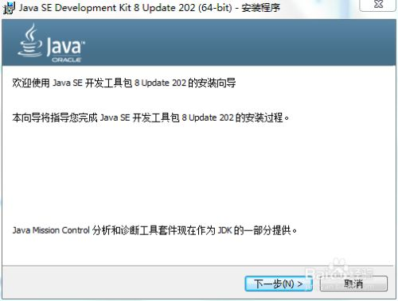
可以更改选择安装路径，注意不要有中文字符的路径，记住安装的路径，后面配置环境的时候会用到
选择好确定后，下一步
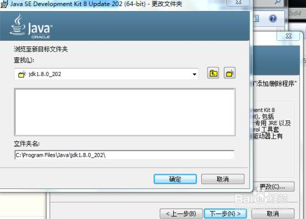
这一步是选择 JRE 的安装目录，也可以更改，也要路径注意不能有中文字符
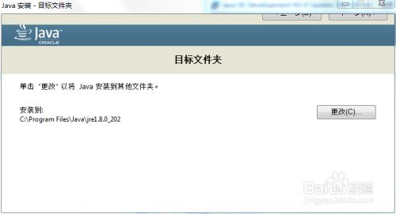
安装成功！
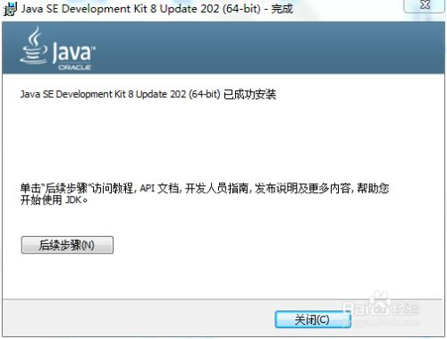
Java的环境配置
配置 Java 环境变量
此电脑—>计算机—>系统属性—>高级系统设置—>环境变量—>系统变量—>新建
变量名：JAVA_HOME
变量值：C:\Program Files\Java\jdk1.8.0_202

继续在系统变量里面新建一个变量
变量名：CLASSPATH
变量值：.;%JAVA_HOME%\lib;%JAVA_HOME%\lib\tools.jar
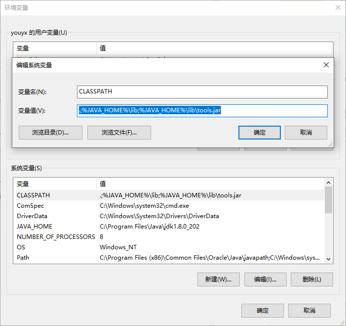
确定保存配置后，win+R打开电脑运行输入cmd进入命令行窗口输入
1 | java -vesion |
正确输出java版本，安装完成
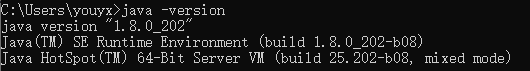
Eclipse的安装
下载Eclipse的oxygen版本的安装包 eclipse-java-oxygen-3a-win32-x86_64.zip，解压到任一位置，打开eclipse.exe即可
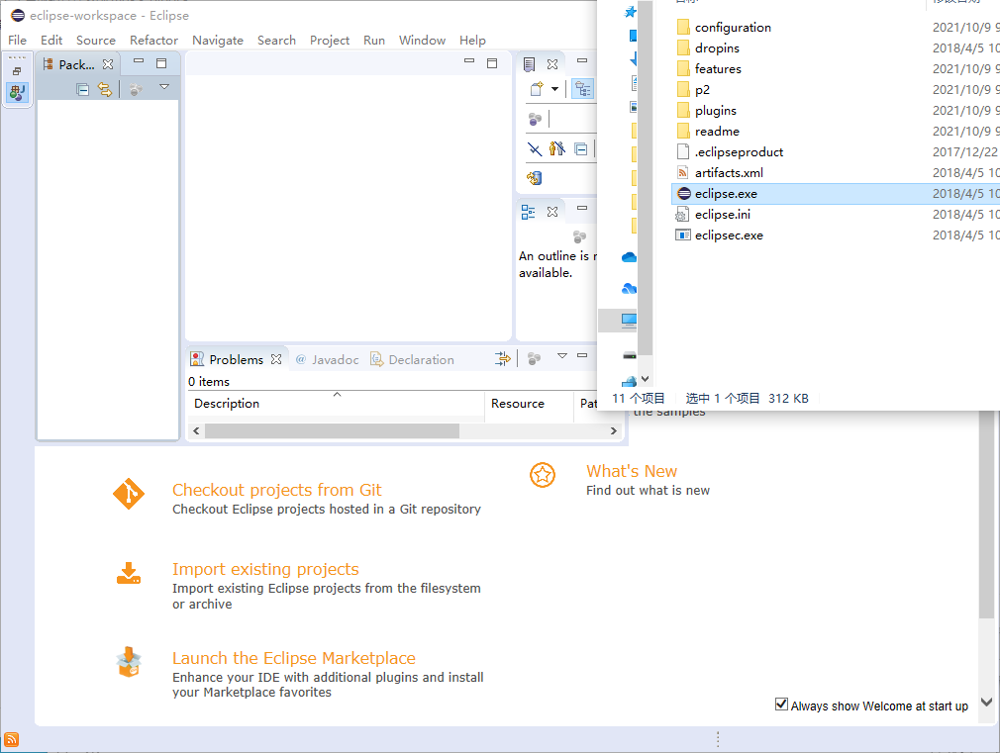
tomcat的安装和配置
下载tomcat 7.0的安装包 apache-tomcat-7.0.96.zip，解压到任一位置
【注意】如果文件路径在C盘，要把权限打开。右键属性—>安全—>编辑—>Users—>完全控制—>确定
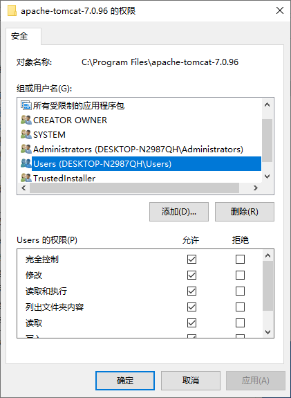
点击bin\startup.bat即可打开
MySQL安装
下载MySQL 5.1安装包mysql-essential-5.1.46-winx64.msi
具体安装过程参考https://blog.csdn.net/tang_chuanlin/article/details/79603063
使用成绩管理系统
导入数据库
新建数据库ssms
win+R打开运行，输入cmd打开命令行，输入MySQL的路径
1 | cd C:\Program Files\MySQL\MySQL Server 5.1\bin |
输入密码后进入MySQL
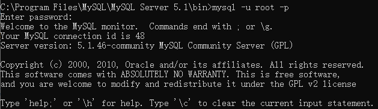
1 | create database ssms; |
输入show tables检查，成功导入数据库
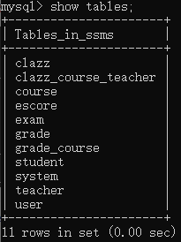
启动tomcat
ssms.war可以从eclipse导出，同时也已经保存在网盘中，可以直接使用
打开ssms.war\WEB-INF\classes\c3p0-config.xml文件，修改服务器所在数据库用户名和密码
将ssms.war文件放入tomcat/webapps目录下
打开 apache-tomcat-7.0.96\bin\startup.bat，启动tomcat服务器
打开浏览器，输入 localhost:8080/ssms 进入登录界面
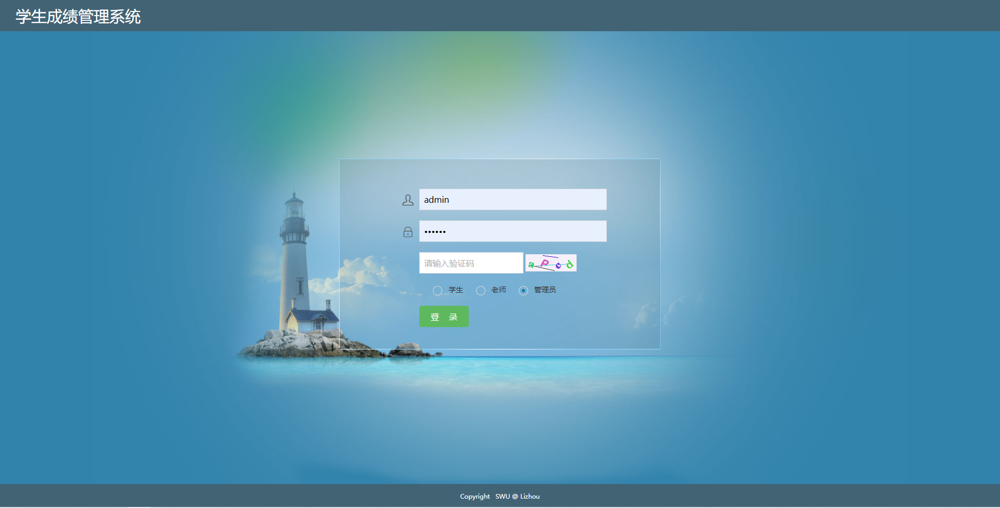
用户名和密码
管理员账号：admin
教师账号：
2012
2011
2010
2009
2008
学生账号：
201301001
201302002
201401001
201402002
密码都为：111111